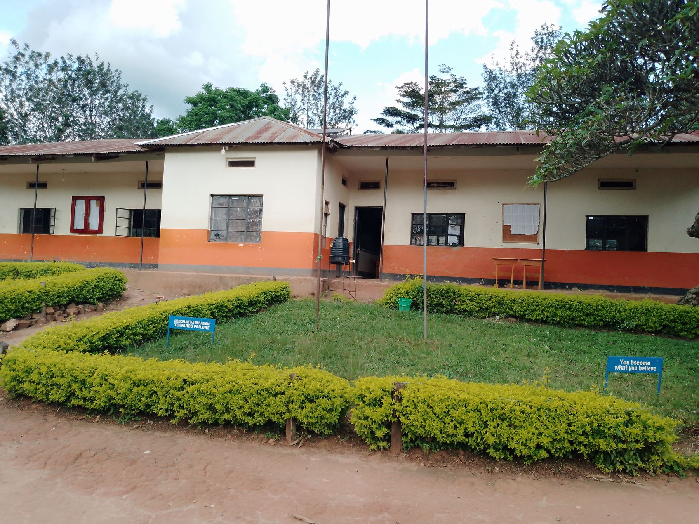
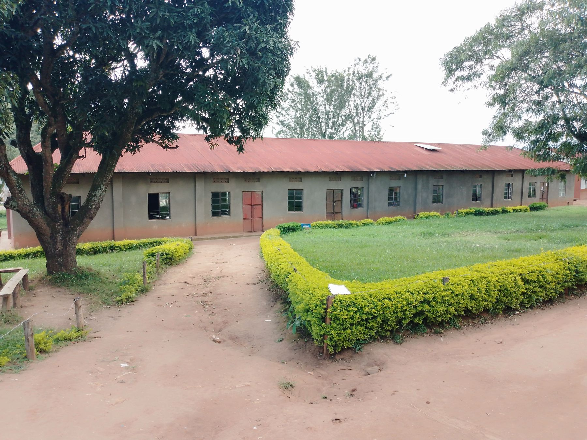

Quality Education
Building a strong foundation for the future.
 ST. PETER’SSECONDARY SCHOOL – RWERANtungamo District, Uganda
ST. PETER’SSECONDARY SCHOOL – RWERANtungamo District, UgandaWELCOME TO OUR SCHOOL
St Peter’s Secondary School Rwera is a learning community in Ntungamo District, Uganda, committed to providing learners with opportunities to develop their knowledge, skills and personal potential through secondary education. The school brings together learners, teachers, parents and the wider community in support of learning and the development of responsible young people. Through classroom learning and participation in school activities, learners can build academic understanding, practical skills, confidence, discipline and respect for others. The school’s community plays an important role in supporting learners as they prepare for further education, work and responsible participation in society.
Building a strong foundation for the future.
Encouraging responsibility and respect.
Every learner deserves an opportunity.
Committed to learning and personal growth.
Working together for a brighter future.
DISCOVER ST. PETER’S
Rooted in the community of Rwera, our school is committed to education, personal development and preparing learners for the future.

ST. PETER’S SS RWERAWe believe education is more than classroom learning. It is an opportunity to nurture knowledge, values, confidence and the skills to contribute positively to society.
With a Catholic foundation and an inclusive approach, St. Peter’s welcomes learners from all religious backgrounds.
YOUR NEXT CHAPTER STARTS HERE
Discover a school community that values education, character and the potential of every learner.

LEARNING & DEVELOPMENT
Explore the learning experience and wider school life at St. Peter’s.
Supporting learners through classroom instruction, study and continuous improvement.
Encouraging discipline, responsibility, respect and positive participation.
School activities help learners explore interests, teamwork and practical skills.
KEEP UP WITH SCHOOL LIFE
Check with the school administration for the latest notices, dates and updates.
Contact the school →Families can contact the school directly for current admissions information.
Send an enquiry →Reach out to the school for information about activities and visiting.
Contact details →A GLIMPSE OF OUR SCHOOL
Photographs supplied in the uploaded school folder.
OUR PROGRESS
We value the efforts of learners, teachers, parents and the wider community in supporting education.
Verified academic results, awards and milestones can be added here as the school provides them.
Share an achievement →WE’RE HERE TO HELP
Reach the school using the contact details below.
Rwera Catholic Parish, Kitashekwa,
Kakukuru – Rwenanura Town Council,
Ntungamo District, Uganda
Approx. 12 km from Ntungamo Municipality along the Ntungamo–Mirama Hills Road.
SEND US A MESSAGE
Complete the form and it will open WhatsApp to send your message directly to the Administrator